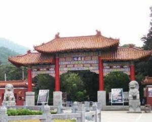
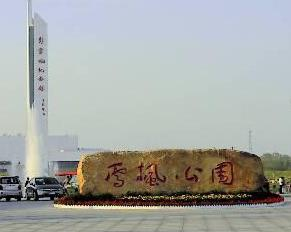
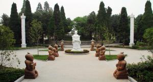
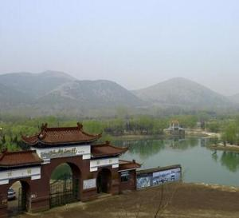
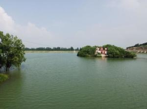

皇藏峪古称黄桑峪，因峪中长满黄桑而得名。这里冈峦起伏，林木参天，岭上坡下，繁衍着松柏、黄桑、青檀等146种木本植物、700余种草本植物，并有58种鸟类在此栖息，还生存有珍奇的皮毛兽水獭、黄鼬、狐狸等，是淮北地区唯一能反映历史上生物群落面貌的区域 。 皇蒇峪属暖湿带落叶阔叶林区，森林景观有突出的特点：一有：古木参天、躯干苍古、成群连片、盘根错节、绿茛如盖的形态美；二有：春天繁花似锦、夏季郁郁葱葱、秋天叶红果熟、冬有银装素果的季相色调美；三有：风吹林涛如海，林中鸟语虫鸣、山涧清泉四出、晨有薄雾、暮有流云的动态美；四有：浓郁清爽、花草芬芳、鲜果诱人的感应美。皇藏峪景点分布范围较广，比较集中的有瑞云寺和天门寺两个景区。

雪枫公园是为纪念以彭雪枫将军为代表的抗日民族英雄而建设的一座集纪念瞻仰、 爱国主义教育、 国防教育及休闲旅游等多种功能于一体的大型城市公园，是宿州市规模最大的爱国主义教育基地。
黄河故道，在今河道以前的河道。从下游自河南武陟、荥阳以下，河道时有变迁。见于历史记载的大小决徙粗略统计约达一千五六百次，极大多数集中在下游。下游故道略呈一折扇形，最北经由今河北霸州市（旧称霸县）、天津海河入海，最南经由颍水、涡水夺淮河入海（一部分黄河水自淮河循里运河注入长江）。

虞姬墓位于安徽省宿州市灵璧县城东虞姬文化园内，墓侧曾建有虞姬庙，庙内塑有项羽、虞姬像，是国家AAAA级旅游景区。
相传虞姬性情温柔，知书达礼，深得项羽喜爱。虞姬自刎后，项羽带着她的尸体，向南驰走，不料汉兵追至，项羽无可奈何地丢下了虞姬的尸体。项羽突围后，虞姬的尸体被来不及突围的楚兵移葬于“霸离铺”东2.5公里处，后来这里出现的村庄就叫“虞姬村”。这即是虞姬墓的来源。

五柳风景区是省级风景名胜区，位于宿州市市区北约30公里的夹沟镇，处于徐州、淮北、宿州三市的中心，总面积35平方公里，这里以“山青、水秀、洞奇、泉灵、稻香”而闻名，景区南、西、北三面环山，植物种类繁多，气候宜人。

五柳龙泉湖位于安徽省宿州市市区北约30公里的夹沟镇，处于淮北、徐州、宿州三市的中心，总面积35平方公里，这里以“山青、水秀、泉灵、洞奇、稻香”而闻名，景区南、西、北三面环山，植物种类繁多，气候宜人。丰富优质的五柳矿泉水润育了著名的夹沟香稻米，宋代至明、清朝为皇宫“贡米”，素有“一家煮饭十家香，十家煮饭香满庄”之誉。